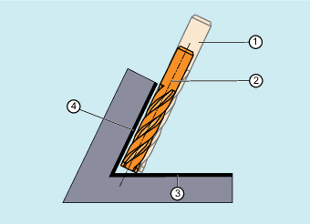
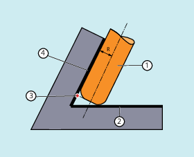

The tool type (tool parameter $TC_DP1) is evaluated. Only milling tools with cylindrical shank (cylinder or end mill, toroidal miller and, in the limit case, cylindrical die mill) are permitted. This corresponds to the tool types 1 - 399, with the exception of the numbers 111 and 155 to 157.
Corner rounding with a standard tool is defined by the tool parameter $TC_DP7. Tool parameter $TC_DP16 describes the deviation of the corner rounding of the real tool compared with the standard tool.
Example: Toroidal miller with reduced radius compared to the standard tool
Tool type | Shaft radius (R) | Corner radius (r) |
|---|---|---|
Standard tool with corner rounding | R = $TC_DP6 | r = $TC_DP7 |
Real tool with corner rounding Tool types 121 and 131 toroidal miller | R' = $TC_DP6 + $TC_DP15 + OFFN | r' = $TC_DP7 + $TC_DP16 |
In this example, both $TC_DP15 + OFFN and $TC_DP16 are negative.
If a tool with a smaller radius than the appropriate standard tool is used, machining is continued using a milling tool, which is fed in in the longitudinal direction until it reaches the bottom (base) of the pocket. The tool removes as much material from the corner formed by the machining surface and limitation surface. This involves a machining type combining circumferential and face milling. Analogous to a tool with reduced radius, for a tool with increased radius, the infeed is in the opposite direction.
① | Standard tool |
② | Tool with smaller radius infeed up to the limitation surface |
③ | Limitation surface |
④ | Machining surface |
Contrary to all other tool offsets of G group 22, tool parameter $TC_DP6 specified for CUT3DCCD has no relevance for the tool radius and does not influence the resulting compensation. The compensation offset results from the sum of the wear value of the tool radius (tool parameter $TC_DP15) and a tool offset OFFN programmed to calculate the perpendicular offset to the limitation surface.
The generated part program does not specify whether the surface to be machined is to the right or left of the path. It is therefore assumed that the radius is a positive value and the wear value of the original tool is a negative value. A negative wear value always describes a tool with a reduced diameter.
When cylindrical tools are used, infeed is only necessary if the machining surface and the surface of limitation form an acute angle (less than 90 degrees). If a toroidal miller (end mill with corner rounding) is used, tool infeed in the longitudinal direction is required for both acute and obtuse angles.
If CUT3DCC is active with a toroidal miller, the programmed path refers to a fictitious cylindrical milling tool having the same diameter. The resulting path reference point is shown in the following diagram for a toroidal miller.
① | Toroidal miller |
② | Limitation surface |
③ | Path reference point |
④ | Machining surface |
R | Shaft radius (tool radius) |
The angle between the machining and limitation surfaces may change from an acute to an obtuse angle and vice versa even within the same block.
The tool actually being used may either be larger or smaller than the standard tool. However, the resulting corner radius must not be negative and the sign of the resulting tool radius must be kept.
For CUT3DCC, the NC part program refers to the contour on the machining surface. As for conventional tool radius compensation, the total tool radius is used that comprises the following components:
Tool radius (tool parameter $TC_DP6)
Wear value (tool parameter $TC_DP15)
A tool offset OFFN programmed to calculate the perpendicular offset to the limitation surface
The position of the limitation surface is defined from the following difference:
Dimensions of the standard tool - tool radius (tool parameter $TC_DP6)
| Note |
When applying tool radius compensation CUT3DCC / CUT3DCCD in combination with the "Advanced Surface" or "Top Surface" function (requiring a license), the setting recommendations regarding "Advanced Surface" / "Top Surface" must be observed. Special test programs are provided in the SIOS portal for checking the set data. → |